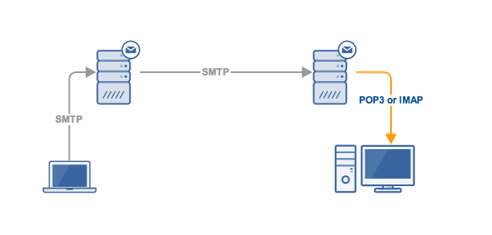

Какво е SMTP?
Повечето интернет системи използват SMTP като метод за прехвърляне на поща от един потребител на друг. SMTP е изпращаш протокол и се използва за изпращане на поща, докато POP или IMAP се използват за извличане на тези имейли от страната на получателя.
Клиентът, който иска да изпрати пощата, отваря TCP връзка към SMTP сървъра и след това изпраща пощата през връзката. SMTP сървърът е винаги включен в режим на слушане. След успешно установяване на TCP връзка, клиентският процес изпраща пощата незабавно.
SMTP моделът е от два вида:
- Метод end-to-end (от край до край)
- Метод за съхранение и препращане
Моделът от end-to-end се използва за комуникация между различни организации, докато методът за съхранение и препращане се използва в рамките на една организация.
За по-подробна информация може да прочетене документацията.